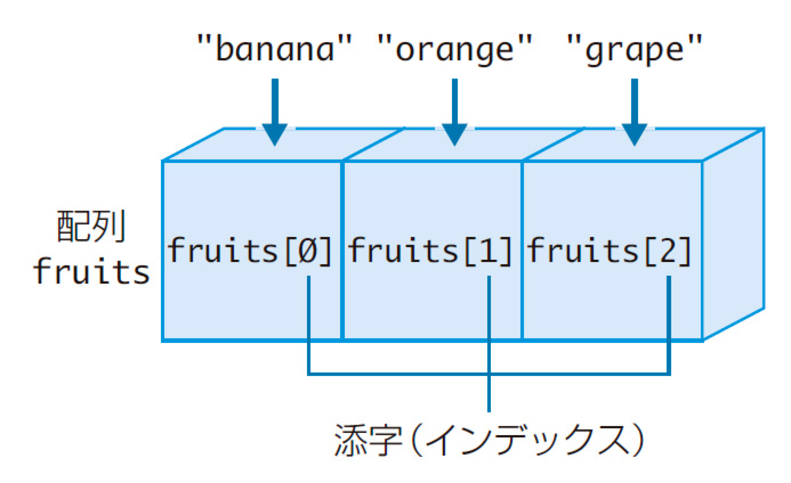

1. はじめに
1-1. 前回の復習
- 【while文】
-
while(条件式){ whileブロック //条件式に合致している間、繰り返し処理される }
- 【for文】
-
for(初期化処理; ループ継続の条件式; ループごとの最後に実行される式){ forブロック //ループ継続の条件式に合致している間、繰り返し処理される }
while(条件式){
whileブロック //条件式に合致している間、繰り返し処理される
}for(初期化処理; ループ継続の条件式; ループごとの最後に実行される式){
forブロック //ループ継続の条件式に合致している間、繰り返し処理される
}
const 配列 = [値1, 値2, 値3, ...];
//例
const fruits = ['apple', 'banana', 'orange'];
console.log(fruits);
//空の配列を宣言することもできる
const empty = [];
console.log(empty);//別の書き方
const 配列 = new Array(値1, 値2, 値3, ...);
//例
const fruits = new Array('apple', 'banana', 'orange');
console.log(fruits);
//配列の長さを指定することができる
const fruits = new Array(3);
console.log(fruits);※上記の2つの書き方は全く同じもので、[] は new Array の省略形。
const fruits = ['apple', 'banana', 'orange'];
console.log(fruits[0]); //0番目の値を取得する
fruits[1] = 'peach'; //1番目の値を変更する
console.log(fruits);※配列自体は const で宣言しているが、配列の値は後から変更できることに注意。
const fruits = ['apple', 'banana', 'orange'];
console.log(fruits.length);
//lengthの値はコンソールに表示されている
console.log(fruits);const fruits = ['apple', 'banana', 'orange'];
console.log(fruits[fruits.length - 1]);配列は添字で値を取得し、添字は基本的に連番（0,1,2,3...）になっているため、ランダムと相性が良い。
const fruits = ['apple', 'banana', 'orange'];
let random = Math.floor(Math.random() * 3);
console.log(fruits[random]);
//ランダムに取得する数字は「配列の値の数」と等しい場合が多いため、以下のように書くとよりスマート
let random = Math.floor(Math.random() * fruits.length);カラーコードの値が何種類か格納された配列を用意し、ページを表示する度にランダムに配列から値を取り出し、body要素の背景色に設定する。
const colors = ['#000000', '#ffffcc', '#99ff99', '#66ffff', '#ff00ff'];
let random = Math.floor(Math.random() * colors.length);
document.body.style.backgroundColor = colors[random];swich文を使った例を改造し、switch文を使わないシンプルな形にする。
<!DOCTYPE html>
<html lang="ja">
<head>
<meta charset="UTF-8">
<meta name="viewport" content="width=device-width, initial-scale=1.0">
<title>おみくじ</title>
<style>
#result {
transition: 1s;
}
.active {
transform: rotateY(360deg);
}
</style>
</head>
<body>
<button id="btn">占う</button>
<p><img id="result" src="https://trident.takagino.net/doc2024/javascript/assets/04/omikuji/omikuji.png" alt=""></p>
<p id="message">何か一言が表示されます。</p>
<script>
const btn = document.getElementById('btn');
const result = document.getElementById('result');
const message = document.getElementById('message');
const path = 'https://trident.takagino.net/doc2024/javascript/assets/04/omikuji';
btn.addEventListener('click', function () {
const num = Math.floor(Math.random() * 5);
switch (num) {
case 0:
result.setAttribute('src', `${path}/daikichi.png`);
message.innerHTML = '買ってないのに宝くじが当たる';
break;
case 1:
result.setAttribute('src', `${path}/chuukichi.png`);
message.innerHTML = '何もしてないのに褒められる';
break;
case 2:
result.setAttribute('src', `${path}/syoukichi.png`);
message.innerHTML = '頭皮の調子が良い';
break;
case 3:
result.setAttribute('src', `${path}/kyou.png`);
message.innerHTML = 'コンタクトレンズが割れる';
break;
case 4:
result.setAttribute('src', `${path}/daikyou.png`);
message.innerHTML = 'どこかの骨を折る';
break;
default:
console.log('エラー');
break;
}
result.classList.toggle('active');
});
</script>
</body>
</html>const files = ['daikichi.png', 'chuukichi.png', 'syoukichi.png', 'kyou.png', 'daikyou.png']; //全てのファイル名を配列に挿入
const texts = ['買ってないのに宝くじが当たる', '何もしてないのに褒められる', '頭皮の調子が良い', 'コンタクトレンズが割れる', 'どこかの骨を折る']; //全ての一言を配列に挿入const btn = document.getElementById('btn');
const result = document.getElementById('result');
const message = document.getElementById('message');
const path = 'https://trident.takagino.net/doc2024/javascript/assets/04/omikuji';
const files = ['daikichi.png', 'chuukichi.png', 'syoukichi.png', 'kyou.png', 'daikyou.png'];
const texts = ['買ってないのに宝くじが当たる', '何もしてないのに褒められる', '頭皮の調子が良い', 'コンタクトレンズが割れる', 'どこかの骨を折る'];
btn.addEventListener('click', function () {
const num = Math.floor(Math.random() * files.length);
result.setAttribute('src', `${path}/${files[num]}`);
message.innerHTML = texts[num];
result.classList.toggle('active');
});配列は添字で値を取得し、添字は基本的に連番（0,1,2,3...）になっているため、for文と相性が良い。
const fruits = ['apple', 'banana', 'orange'];
for(let i = 0; i < fruits.length; i++){
console.log(`${i}番目の値は、${fruits[i]}です。`);
}以下のような配列がある。
const num = [5, 10, 15, 20, 25, 30];//Q1
let add = 0;
for (let i = 0; i < num.length; i++) {
add += num[i];
}
console.log(add);
//Q2
let add = 0;
for (let i = 1; i < num.length - 1; i++) {
add += num[i];
}
console.log(add);先ほどのおみくじを配列とfor文を使って改造し、それぞれ出た回数をカウントして表示する。（見本）
※難しいので、出来るところまで試行錯誤してください。
<!DOCTYPE html>
<html lang="ja">
<head>
<meta charset="UTF-8">
<meta name="viewport" content="width=device-width, initial-scale=1.0">
<title>おみくじ</title>
<style>
#result {
transition: 1s;
}
.active {
transform: rotateY(360deg);
}
</style>
</head>
<body>
<button id="btn">占う</button>
<p><img id="result" src="https://trident.takagino.net/doc2024/javascript/assets/04/omikuji/omikuji.png" alt=""></p>
<p id="message">何か一言が表示されます。</p>
<ul id="count"></ul>
<script>
const btn = document.getElementById('btn');
const result = document.getElementById('result');
const message = document.getElementById('message');
const path = 'https://trident.takagino.net/doc2024/javascript/assets/04/omikuji';
const files = ['daikichi.png', 'chuukichi.png', 'syoukichi.png', 'kyou.png', 'daikyou.png'];
const texts = ['買ってないのに宝くじが当たる', '何もしてないのに褒められる', '頭皮の調子が良い', 'コンタクトレンズが割れる', 'どこかの骨を折る'];
//回数追加
let daikichi = 0;
let chuukichi = 0;
let syoukichi = 0;
let kyou = 0;
let daikyou = 0;
const count = document.getElementById('count');
count.innerHTML = `<li>大吉：${daikichi}</li>
<li>中吉：${chuukichi}</li>
<li>小吉：${syoukichi}</li>
<li>凶：${kyou}</li>
<li>大凶：${daikyou}</li>`;
btn.addEventListener('click', function () {
const num = Math.floor(Math.random() * files.length);
result.setAttribute('src', `${path}/${files[num]}`);
message.innerHTML = texts[num];
result.classList.toggle('active');
//回数更新
count.innerHTML = `<li>大吉：${daikichi}</li>
<li>中吉：${chuukichi}</li>
<li>小吉：${syoukichi}</li>
<li>凶：${kyou}</li>
<li>大凶：${daikyou}</li>`;
});
</script>
</body>
</html>今までの授業では「getElementById()」を使用し、任意のID名がついた要素を1つだけ取得してきた。しかしJavaScriptには、他にも多くの要素の取得の仕方がある。
<body>
<ul>
<li>aaa</li>
<li>bbb</li>
<li class="obj">ccc</li>
<li class="obj">ddd</li>
</ul>
<script>
</script>
</body>const list = document.getElementsByTagName('li'); // Elements（複数形）であることに注意
console.log(list);取得した値は配列のように扱うことができる。（HTMLCollection - MDN）
const list = document.getElementsByTagName('li');
//for文で1つずつ取り出す
for (let i = 0; i < list.length; i++) {
console.log(list[i]);
}const list = document.getElementsByClassName('obj'); // Elements（複数形）であることに注意
console.log(list);
for (let i = 0; i < list.length; i++) {
console.log(list[i].innerHTML);
}CSSセレクタと同様の記述で、要素を指定することができる。
const elem = document.querySelector('.obj'); // セレクタに一致した最初の要素だけを取得する
console.log(elem);
const all = document.querySelectorAll('.obj'); // セレクタに一致した全ての要素を取得する
console.log(all);
for (let i = 0; i < all.length; i++) {
console.log(all[i]);
}取得した値は配列のように扱うことができる。（NodeList - MDN）
document.getElementsByTagName('要素名');
document.getElementById('id名');
document.getElementsByClassName('class名');
document.querySelector('セレクタ');
document.querySelectorAll('セレクタ');※この授業では、わかりやすさを重視し「querySelector, querySelectorAll」を使用します。
ボタンをクリックしたらテキストを取得し、bodyの背景色に適応する。
<button class="btn">aa3333</button>
<button class="btn">33aa33</button>
<button class="btn">3333aa</button>const btn = document.querySelectorAll('.btn');
//取得した全てのボタンにクリックイベントを登録する
for (let i = 0; i < btn.length; i++) {
btn[i].addEventListener('click', function () {
});
}リンクテキストにマウスオーバーすると設定されているURLが表示され、マウスアウトすると元に戻る。
<ul class="links">
<li><a href="https://computer.trident.ac.jp/courses/game_science/">ゲームサイエンス学科</a></li>
<li><a href="https://computer.trident.ac.jp/courses/cg_specialist/">CGスペシャリスト学科</a></li>
<li><a href="https://computer.trident.ac.jp/courses/web_design/">Web学科</a></li>
</ul>
<p class="result">URLが表示されます。</p><!doctype html>
<html lang="ja">
<head>
<meta charset="utf-8">
<meta name="viewport" content="width=device-width, initial-scale=1.0">
<title>sample</title>
<style>
body {
text-align: center;
}
ul {
padding-left: 0;
list-style: none;
}
img {
max-width: 100%;
height: auto;
}
.all {
display: flex;
justify-content: space-around;
width: 80%;
margin: 0 auto;
}
.chr {
width: 30%;
}
</style>
</head>
<body>
<h1>click game</h1>
<p class="msg">クリックでモンスターを倒せ！</p>
<div class="all">
<div class="chr">
<img src="https://trident.takagino.net/doc/2018/javascript/data/03/images/a0.png" alt="">
<p>HP:10</p>
</div>
<div class="chr">
<img src="https://trident.takagino.net/doc/2018/javascript/data/03/images/a1.png" alt="">
<p>HP:10</p>
</div>
<div class="chr">
<img src="https://trident.takagino.net/doc/2018/javascript/data/03/images/a2.png" alt="">
<p>HP:10</p>
</div>
</div>
<script>
</script>
</body>
</html>